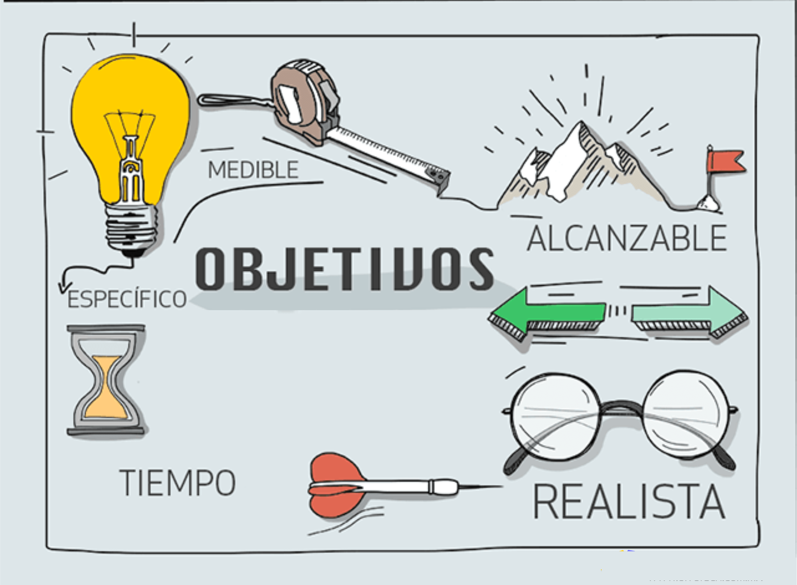

A lo largo de nuestras vidas desde pequeños crecemos con sueños y metas, ser astronauta, bombero, entre otras. Las cuales a lo largo de la vida van creciendo y evolucionando: que carrera quiero estudiar, donde o en que quiero trabajar, cuales metas o que quiero lograr en la vida. Durante este proceso uno se va preparando en diferentes lugares y situaciones de vida jardín, colegio, Universidad entre otras. Donde desarrollas y adquieres conocimiento para cumplir y lograr tu metas. No obstante, nadie puede lograr solo una hazaña como esta solo. A lo largo de nuestras vidas nos encontramos con personas que nos ayudaran a formarnos como personas y alcanzar nuestros sueños y metas

